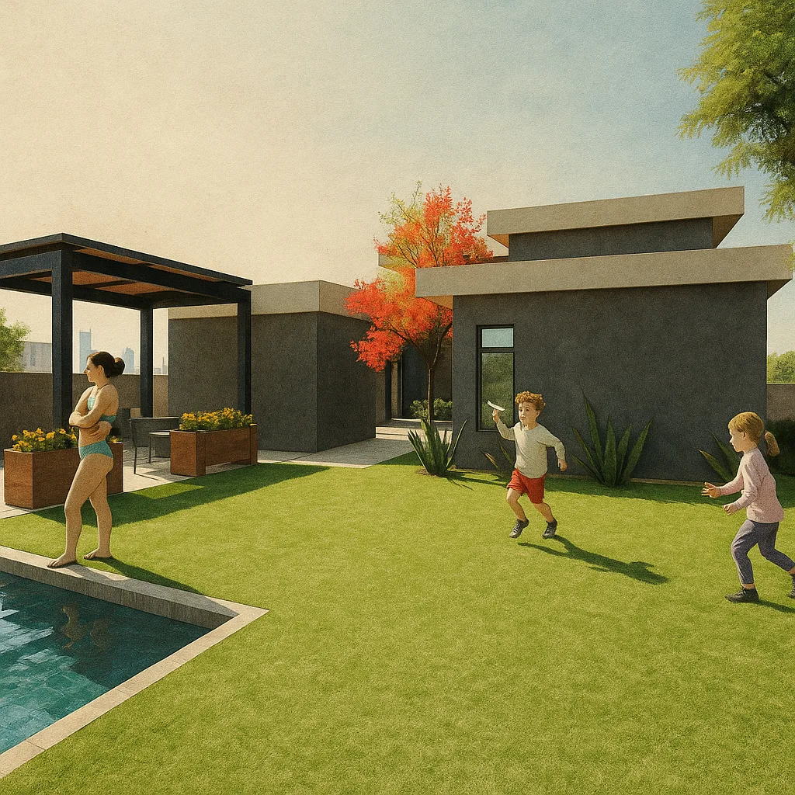
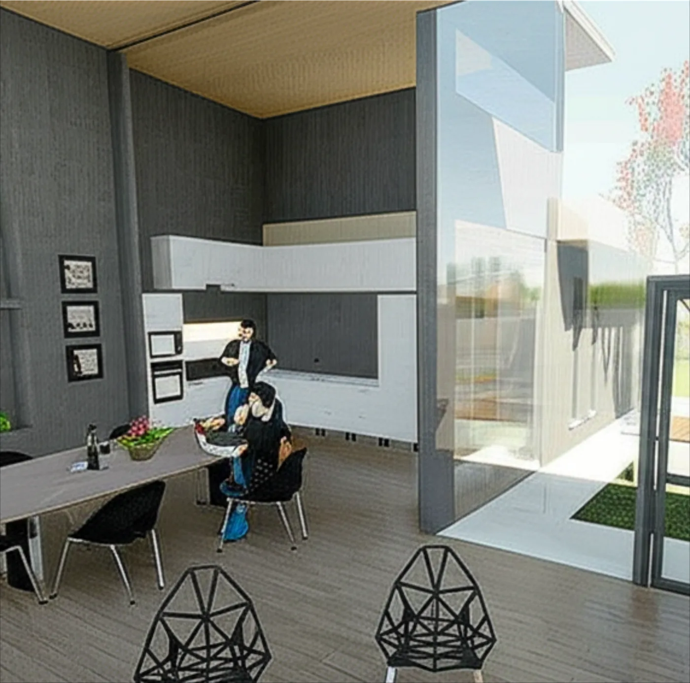
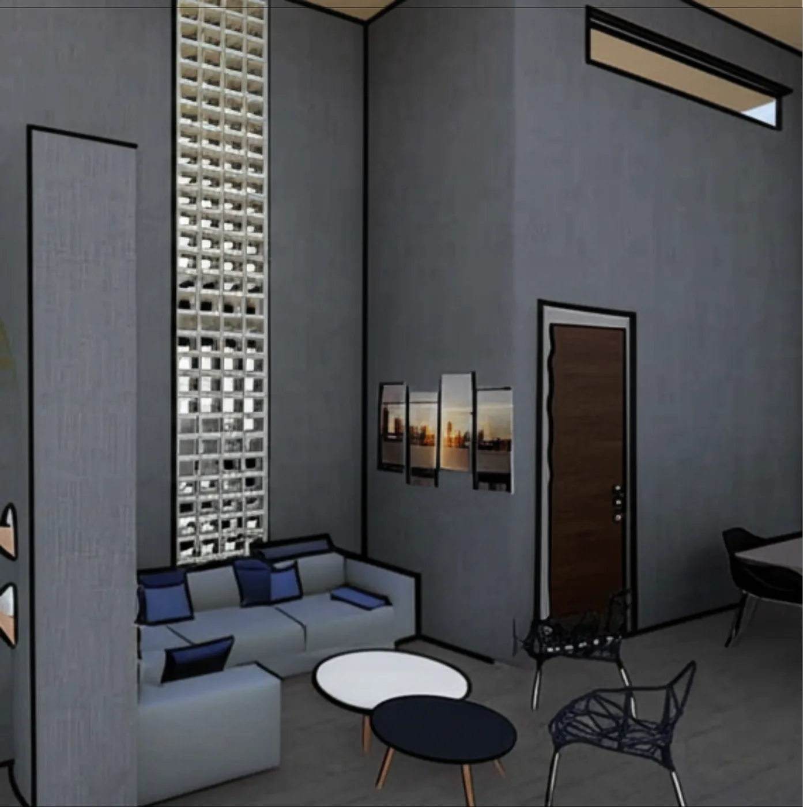
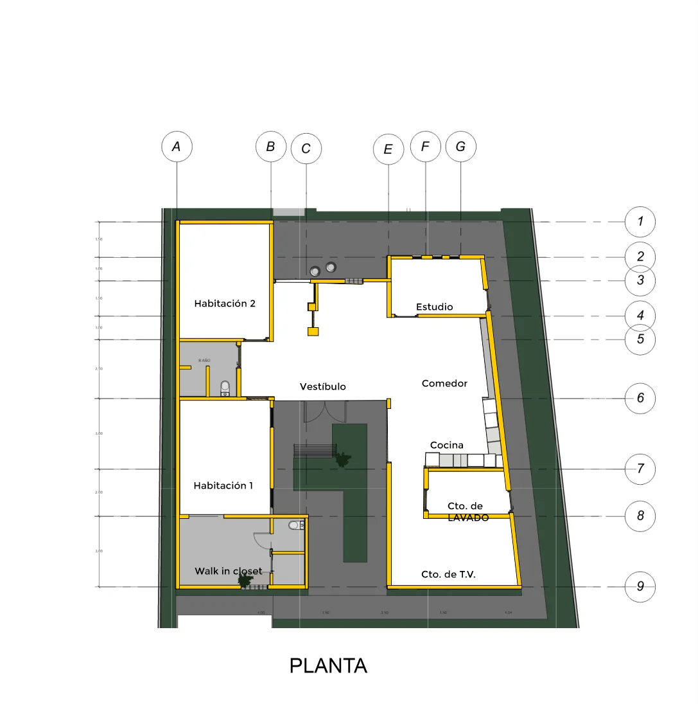
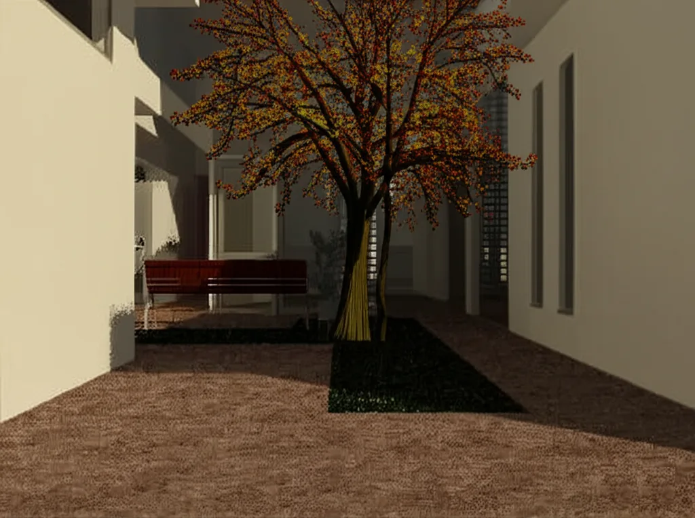

El Reto y la Visión
"Raquel no imagina solo una casa, sino el escenario perfecto para su vejez: un lugar donde la sabiduría y la paz se fundan con la naturaleza, sin sacrificar la elegancia contemporánea. El reto que nos plantea es claro: ‘Quiero techos altos que hablen de libertad, árboles que sean más que decoración —protagonistas—, y un equilibrio entre lo sobrio y lo acogedor. ¿Cómo logramos que mi estudio independiente y el área familiar al aire libre fluyan sin romper esa armonía?’."
El diseño responde con volúmenes amplios, muros altos, ventanales estratégicos que enmarcan los árboles como obras de arte vivas, y materiales contemporáneos —concreto pulido, acentos de madera cálida— que cuentan una historia de modernidad sin frialdad. Aquí, lo inusual se vuelve esencial: el jardín no rodea la casa; la casa abraza al jardín. Y en el centro, Raquel, disfrutando de sus tardes en un patío interior con que luz filtrada por las hojas.
Explorando el Diseño
Cada proyecto nace de una idea que evoluciona. Aquí mostramos diferentes ángulos y momentos del concepto, desde los bocetos hasta los renders detallados que dan vida a la visión del cliente.



La Inteligencia del Diseño

- ✓ Materiales: Contemporáneos (concreto, madera clara) sin frialdad, priorizando texturas táctiles.
- ✓ Personalidad: Techos altos con espacios serenos, líneas puras pero cálidas.
- ✓ Elementos clave: Árboles integrados arquitectónicamente, estudio independiente y jardín interior.
El Detalle que Enamora

Ficha Técnica
- Ubicación:
- Ixtapaluca
- Año del Proyecto:
- 2022
- Superficie:
- 200 m²
- Tipología:
- Vivienda Unifamiliar
- Materiales Clave:
- Estuco, Estructura de concreto, Vidrios templados.
¿Interesado en un proyecto similar?
Hablemos de tu visión. Completa el formulario y nos pondremos en contacto a la brevedad.